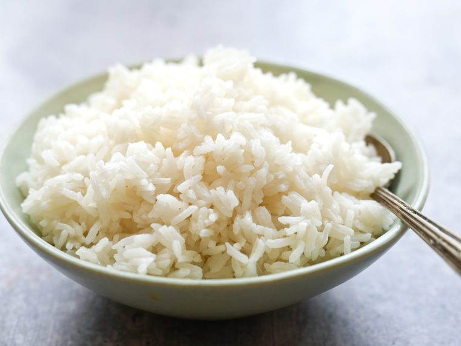

Rice Dish

Description
This rice dish is a mixture of chopped summer sausauge, white onion, bell peppers and seasonings with jasmine rice
Ingredients
- Jasmine Rice
- Summer Sausage
- White Onion
- Bell peppers
- Seasonings - cajun, paprika, pepper
Steps
- Prepare Jasmine rice by boiling 1 cup of rice in 2 cups of water until rice absorbs the watter.
- Chop or dice the summer sausage, white onion and bell peppers.
- Put avocado oil in a large saucepan, mix summer sausage, onion and bell peppers in that oil. Add seasoning to this mixture. Cook until ingredients are light brown in color.
- Add the completed rice to mixture of summer sausage, onion and bell peppers on same saucepan.
- Mix rice and other ingredients until there is an even distribution
- Ready to serve